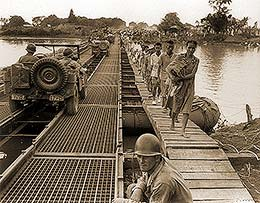
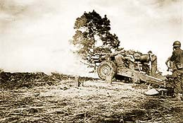

|
j
a v a s c r i p t |
Pg.1/2
February 13, 1945

Civilians from South Manila
Spent most of the day amidst a horde of people at Nagtahan — all searching for familiar faces amongst the never-ending throng of numbed humanity streaming across the river. The iron tread bridge was up — rubber pontoons laid sideways, approach roads cleared on either end — all completed in just 12 hours. All day today jeeps, large trucks, armored vehicles and ambulances kept coming and going, kicking up a storm of dust that stuck to grimy perspiring faces. I've never swallowed more dust in my life. People coming over the bridge were mobbed by friends. Those with any strength remaining talked; many just shook their heads, muttered a few words and moved on. I stood under the sun for hours, listening and taking notes. A car would pass and all would strain to get a glimpse of the occupants. A few would yell out in recognition; typically it would go like this: — Tita! Where's Tita? — All right, but Nene is dead! The names differed but the answer was always the same: Someone was all right; someone else was dead. I doubt if any family came through intact. Their stories corroborated earlier stories and filled in some blanks. The Japanese methodically started the fires. As they retreated towards the Walled City, block-by-block was subjected to close-range mortar fire, machine guns and grenades. Concrete buildings were blown up, and if the ruins were solid enough, a few stayed to form a rear guard. Anyone on the street was fired on, including civilians evacuating a burning or crumbling ruin.

Reports of Japanese barbarity and civilian casualties forced the American High Command to throw caution to the wind and try to finish off the Japanese quickly. American heavy batteries behind us on Brixton Hill are letting off such a stream of shells that I can barely write for all the shaking of the house. Our glass panes are rattling noisily in protest. American planes have dropped several heavy bombs now — possibly on Corregidor. With the American artillery just behind us, some in Manga Avenue fear Japanese retaliation shelling from Marikina or Montalban. We'll know tonight. . . . . |
|
|
|
|